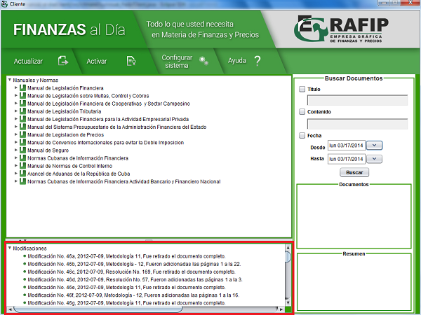

Panel de Modificaciones
El panel "Modificaciones" contiene la relación de las últimas modificaciones realizadas al cuerpo legal. Si desea conocer las modificaciones o cambios introducidos a las publicaciones en los últimos meses puede hacerlo seleccionando la modificación correspondiente en este panel. El nombre mostrado en el panel indica el tipo de modificación.
Para acceder a la documentación puede hacerlo dando doble clic en la modificación que desea visualizar y la misma se mostrará en formato PDF, debe tener instalado previamente en su ordenador algún lector de este formato.
